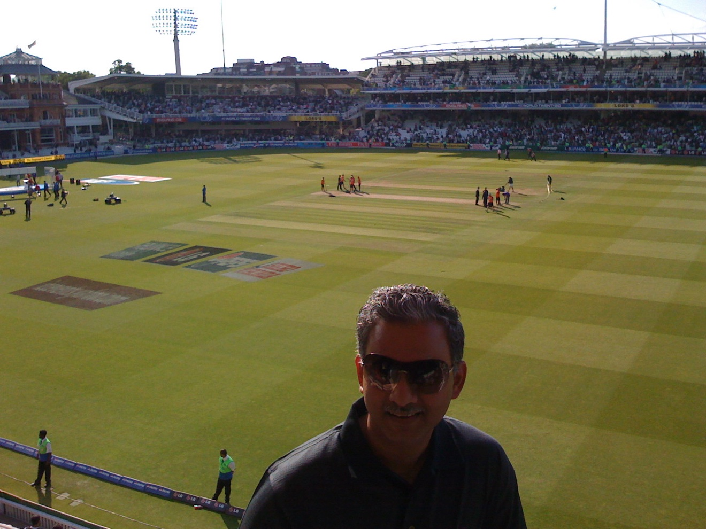
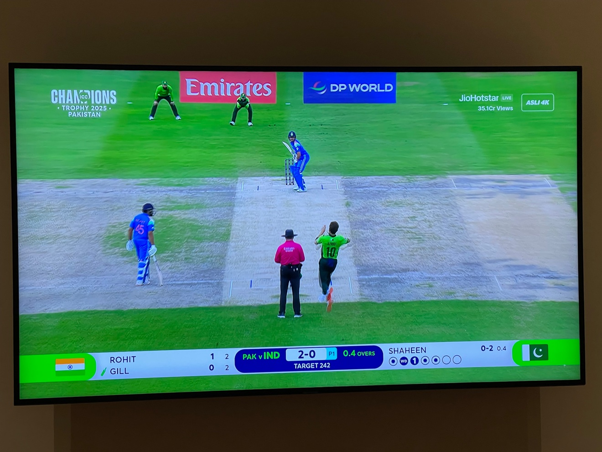
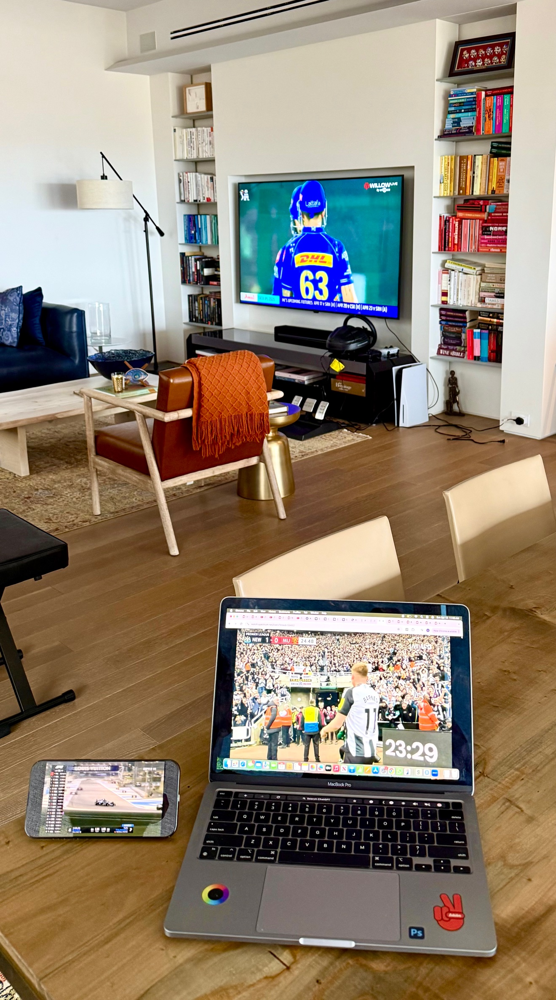
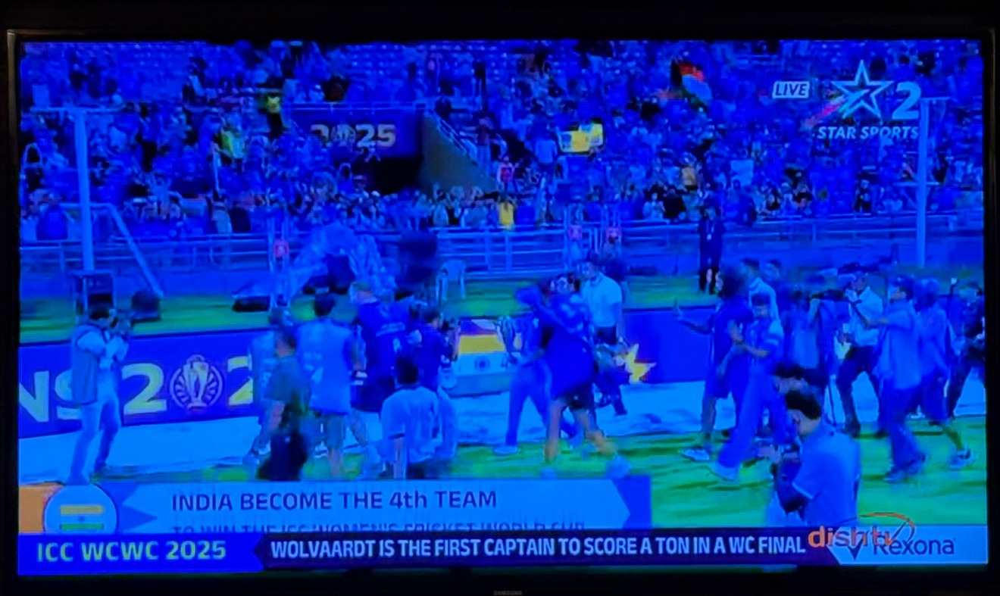
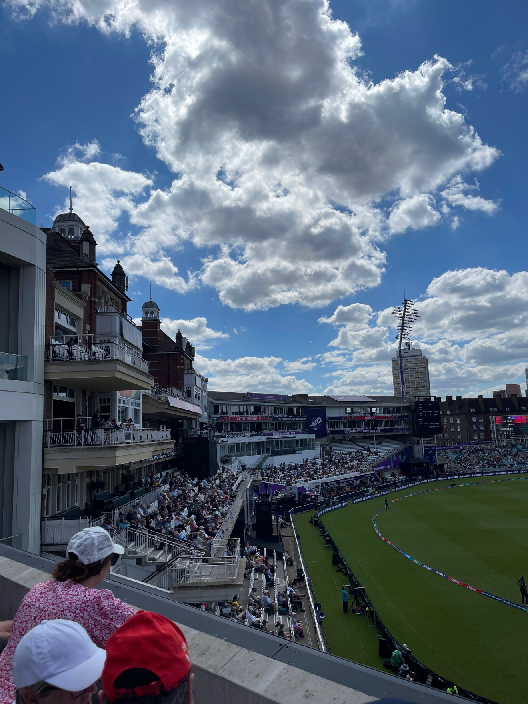
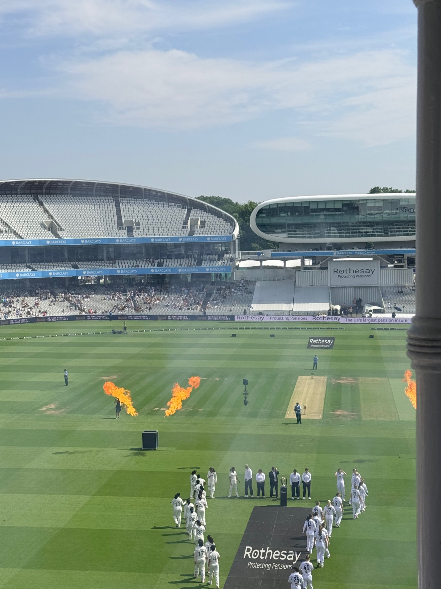

Sixteen years ago I was in a heated debate with a bunch of old friends, catching up over a drink, arguing about leadership and sports. I caught a 16-hour flight soon after and thought the debate was so good I should capture the questions and my views. The thoughts resulted in an article for People Matters magazine, which captured the difference between winning teams and others.
I have been cricket crazy for more than fifty years. And I keep finding that the game teaches you leadership lessons better than most boardrooms do.
2019–2024 — three lessons in leading
2019–2024
July 2019 — the captain who won as a human
What an amazing set of leadership lessons from my favorite player at the World Cup Cricket ODI this year — Kane Williamson. It hugely resonates with our culture at Genpact. He and New Zealand won — as humans!
November 2023 — success is your successor surpassing you
Those who know me know how incredibly "cricket crazy" I am. Then when you witness a scene like this on the cricket field that teaches you a life lesson, it's even more satisfying. A mega star in his own right, Virat Kohli, bows down to the "prior gen rockstar" Sachin Tendulkar — and you have the latter vociferously cheer the person who just beat his record. That is a life lesson learnt.
How many leaders define their success as the even higher success achieved by their mentee — successor — in business, in life? It's not often that you see this. When you see it, you say hats off to Virat and Sachin — not for their cricket feats, but for this way of thinking of defining success.
February 2024 — the ingredients
Passion, Grit, Commitment, Humbleness, Learning mindset, Ambition, Resilience. Mix these in any field and you get sustained superlative performance. That's Yashasvi Jaiswal's story. Have to love this game, cricket!
January 2025 — what uninspiring leadership looks like
January 2025
This is Gautam Gambhir, coach of the India Cricket Team, at the post-match press conference in Sydney after India lost the Test series 3–1 to the Aussies. Listen to it to learn what uninspiring leadership in sports teams or business teams looks like:
- Start by congratulating the victor — in this case the Australian team. Not one word on that! Shows a learning attitude and humility.
- Be self-reflective — how we made mistakes, will learn and get better.
- Give importance to "happiness in team" — that's team spirit. All research has shown that high-performing teams care for and take joy in the performance of their team members. There is joy in being in the team with each other. It's not just about performance and scores. Results automatically follow!
- Most importantly, say that "I, as the leader, take personal responsibility for letting fans down — I need to learn and improve." Not once did that sentiment come out from Gautam Gambhir.
A coach's and leader's body language and words must feel joyful, uplifting — not clinical, not come across as "I know it all."
No sports team or business team can ever achieve "high peak performance status" unless the leader exhibits the above visibly, and people passionately want to "go above and beyond" for that coach — leader. That's the contrast between Rahul Dravid and Gautam Gambhir, and the results of the India cricket team in the last six months prove my point. Until we have a new coach, India cannot come back to its peak of early 2024.
February–March 2025 — why this classroom is so big
February–March 2025

February 2025 — 356 million watching
Nothing to beat the atmosphere of a cricket game between India and Pakistan. Nothing comes even close!
What struck me is that today the match between the two teams — a league game in Dubai at the Champions Trophy 2025 — is being viewed by 356 million people on the Jio Hotstar streaming platform. If this was a final, that would be 500 million+. That compares to 571 million for the 2022 Qatar World Cup Football Final and 186.2 million for the 2024 Super Bowl.
It's a total joy of emotions and passion to be able to watch this game. The joys of sports and cricket!
March 2025 — building a league, building a business
Cricket + building a business from scratch + storytelling in a podcast + history + India + on path to be #1 in their business category. Given my passions and interests, this is a dream concoction!
I just described a podcast episode that dropped this morning into my Spotify account from one of my top 3 favorite podcasts I subscribe to — "Acquired." Ben Gilbert and David Rosenthal do a masterful job in their 4+ hour episode on the IPL, the Indian Premier League: the fastest-growing, most dynamic and most disruptive force in the sports industry today — valued at $16B, with a TV rights deal higher in per-match dollars than the NBA and the English Premier League, all for a league of just 10 teams playing 74 games a season, and only 17 years old. As a diehard cricket fan: Ben and David, you nailed it! So many lessons to learn from the journey of the IPL — and it's not done.
April 2025 — the fan, on three screens
April 2025

Some days it's all amazing sports! I am in New York, 12 noon, watching IPL Cricket — Mumbai vs Delhi — on TV, EPL Football — Newcastle vs Man United — on Mac, and Formula 1 — the Bahrain race — on iPhone. Such a treat to be able to enjoy all 3 in real time. Spring and summer is cricket, football, tennis, F1, all happening across the globe!
November 2025 — the team I would rather watch, and they won the World Cup
November 2025

November 1, 2025 — the team I would rather watch
There is something special about the Indian women's cricket team right now. As a diehard passionate cricket follower for 50+ years, at this moment the authenticity, sheer joy and emotion, team spirit and passion evident in the way every Indian women's player comes across has made it more fun and deeply satisfying to watch than the men's game — replete with sledging, four-letter words, too much about personal egos and records, and a "curmudgeon" of a coach who inspires me ZERO!
If the women's and men's Indian cricket teams are playing at the same time, I know which one I will be glued to the TV to watch. It's the more fun, human and emotional one — the women's team, of course!
November 2, 2025 — World Cup winners
Women's World Cup Cricket Winners — India! Fortunate to have seen the whole game, glued to my television.
More than just the game — which was thrilling and riveting — it's the "joie de vivre" of the team, which has been obvious in their faces, their body language and the way they enjoy each other's success, that is the reason I fell in love with the team. They wear their emotion and passion on their sleeves, and in victory they shared their joy with everyone — including the old Indian women's players who could not win the cup in spite of coming so close.
Most importantly, it will be such a motivation and inspiration for many generations of women to come — not just in cricket, but as role models and leaders in all spheres of life and business.
November 2025 — the classic bad-leader problem
November 2025
I have decided to stop following and watching Indian Test cricket. I have been clear, right from my post after the press conference Gautam Gambhir gave after the loss to Australia ten months back, that he is a "terrible leader." The loss now to South Africa, 0–2, is in any other world time for a leadership change.
Once again he gives excuses — transition of the team, etc. — and I have maintained that his problem is a classic "bad leader problem":
- No strategy.
- Or a strategy that no one knows.
- A bloated ego — "I am always right."
- Uninspirational — average team members rarely lift to overperform.
- When confronted with a loss, blame everyone else.
I would never ever agree to be in a team where a person like him was my leader. I have always thrived under amazing leaders — the opposite of all the above.
There is zero accountability! One more reinforcement that leadership in sports and business and society is not only about talent, but about vision, humility, vulnerability, transparency, communication — creating a joyful culture of team and collaboration, and going above and beyond. So painful, this loss — but completely expected. Hope swift action is taken — but that's only a hope!
December 2025 — we forgive humans, not machines
December 2025
Technology makes a mistake, and it's immediately attacked as being useless — to be sacked!
The context is a high-octane cricket series, Australia vs England — the Ashes. The technology used obviously had a glitch; as a result, a wrong decision was taken by the umpire who had to use the technology. Then we have another mistake in the same game. As a passionate follower of cricket, and one who believes in the use of technology, I thought of the reactions from fans, experts, players, captains, cricket administrators — and it made me think:
- Human mistakes are tolerated. Umpires in the days of no tech support always had a certain error rate; it was considered part of the game.
- Enter technology — high-speed cameras, ball tracking. Error rates overall reduce! But it's not perfect.
- When technology makes a mistake, there is a huge hue and cry. We are unforgiving of tech mistakes.
- Particularly as in this instance, the umpire cannot use technology and then overrule the technology using his own "gut and judgement."
Isn't this the world of AI we are in — where autonomous systems will be available, but adoption and acceptance has to cross this barrier of "sack the technology because it made a mistake"? The higher the stakes involved, the less the chance that full autonomy will be allowed. We humans won't accept it. We want a "human" responsible!
Made me wonder and ponder.
February 2026 — 270 silver rupees
February 2026
Life and the world is full of wondrous stuff that brings joy when you dig into the history and the why!
England vs Scotland, Feb 14, 2026: Cricket World Cup T20 in Calcutta; Rugby Six Nations game for the Calcutta Cup in Edinburgh. In a strange and delightful coincidence, we have the national teams battle it out in cricket and rugby today — one game in Calcutta, the other for the Calcutta Cup. Of course, since the years the Calcutta Cup rivalry started in 1879, the city's name has changed to Kolkata.
So, what is the story? The Calcutta Rugby and Football Club was founded in 1873 in what is now Kolkata, India. The club was formed by British expats and soldiers who held a popular Christmas Day rugby match between teams representing England and Scotland. However, the club disbanded in 1878 because rugby was losing popularity compared to sports like polo and tennis. To create a lasting memorial, the members withdrew their remaining funds — all of 270 silver rupees — and had them melted down to create the trophy. They gifted it to the Rugby Football Union in England with the request that it be played for annually. And it has been!
June 2026 — July in London
June 2026

July in London is the absolute BEST! A perfect day to walk to the Kia Oval to watch the T20 Women's World Cup Cricket semis — Australia vs West Indies. A bit sad that India didn't make it, but then there is another semis, then finals, then the India vs England women's T20 and Test, then the men's one-day and India vs England Test, and Wimbledon, and of course the Football World Cup. That's why July in London is the best.
July 2026 — the vow, and what the game is really for
July 2026

July 9, 2026 — the vow, renewed
Jan 5, 2025, I said I would STOP watching Indian men's cricket as long as Gautam Gambhir is coach of the Indian team. The unbelievable, pathetic performance of the Indian team in Ireland and England in the last 30 days reinforces why I said it.
Leadership matters > capabilities and skills. And great leaders take responsibility and step back — or they are fired! That's not happening here, and there is no joy in watching this team.
Read my post of 18 months back. The arrogance and ego I talked about then is playing out as expected. I wish I had been wrong, but I wasn't!
July 19, 2026 — Lord's, and what the game is really for
MCC Lord's cricket ground, India vs England. In the last 2 hours I have met 10+ leaders I hadn't met in a couple of years — from London, New York, Boston, Bombay, Paris, Munich. You get it.
Cricket in the summer at Lord's is the best place to catch up with friends. The game is an excuse. If India wins, it's a bonus — unlike today. But it's fine.
Many who read this are probably at the game!
Sports brings people together.